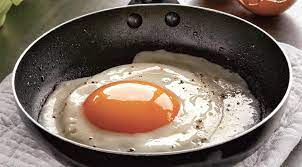

Список рецептов/Яичница глазунья
Яичница глазунья (божественная)
Утром прекрасный завтрак это яичница глазунья. Минимум ингредиентов и навыков для её изготовления. В ней хороший баланс между жирами, углеводами и белками.
Состав и калорийность:
| Калорий всего: |
150 кКал |
| Белки: |
20 Гр |
| Жиры: |
5 Гр |
| Углеводы: |
32 Гр |
Ингредиенты
- Яицо 3 шт.
- Масло сливочное (натуральное)
- Соль
Способ приготовления
- Разогреть сковороду
- Положить кусочек сливочного масла
- Растопить
- Влить 3 яица
- Добавить соль по вкусу
- Довести до готовности
Готовое блюдо:

Ссылка на полное изображение
Поиск в Yandex